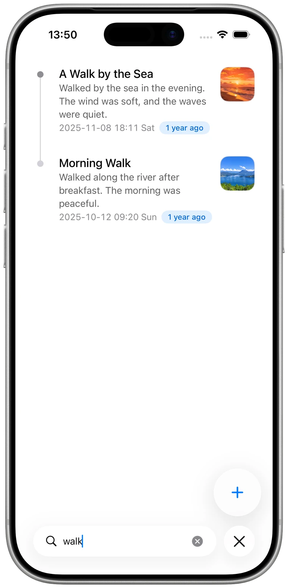

Your life, in one timeline.
Stillline Moments is a personal timeline for the moments that matter.
Write it down. Add a photo. Tap + and the moment is yours — to keep, to revisit, to remember.
Made to be used every day.
Timeline
Time does the organizing. Scroll back, and you’re there again.

Words and photos
A few words, a photo you took in passing. No forms, no fuss.

Categories, your way
Life, Insight, Work — or whatever fits. Tap to make a category your own.

Search
Can’t remember when? Type a word, and the moment finds you.

Private by design.
No account. We run no server. Your entries stay on your iPhone.
Open the app and write. That’s all there is to it.
Record life. Keep the memories. See the path of time.
Stillline Moments